Smart Recipes
Recipe suggestions help users decide what to make based on their needs and available ingredients.
Product Design · UI/UX · Branding
Hearth is a meal planning and pantry management app designed to reduce dinner decision fatigue, simplify grocery planning, and help users make better use of the food they already have.
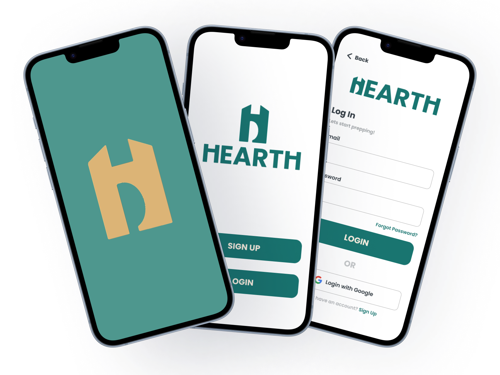
Overview
Hearth was created around a familiar everyday problem: figuring out what to eat can become surprisingly exhausting.
Meal planning often involves several disconnected decisions — deciding what sounds good, remembering what is already in the pantry, considering health goals, making a grocery list, and trying not to waste food.
Hearth brings those tasks together into one experience so users can plan meals with more confidence and less mental effort.
The challenge
The problem wasn't simply finding recipes — it was connecting recipes to the user's real household.
Users may not know what ingredients they already own, what needs to be used soon, what fits their nutritional goals, or what they still need to buy.
The design challenge was to create one system that could support those decisions without making meal planning feel even more complex.
Users
Hearth was designed around different household situations rather than a single type of user.
The primary audience included families coordinating meals, single-person households trying to reduce waste, and busy workers who needed faster decisions at the end of the day.
Across those groups, the shared needs were simplicity, visibility, convenience, and less repetitive planning.


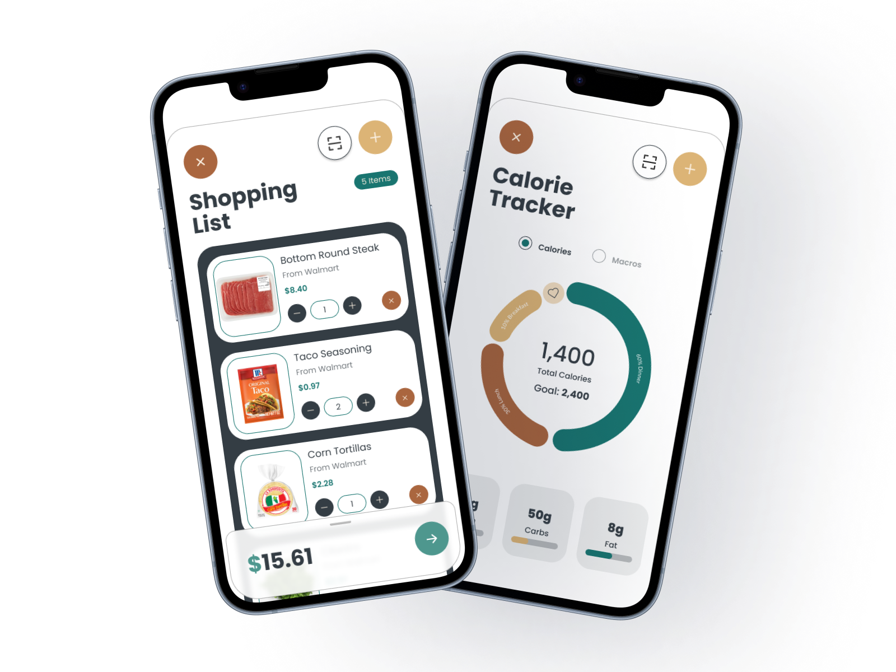
Core features
Recipe suggestions help users decide what to make based on their needs and available ingredients.
Users can keep track of ingredients already at home, including support for scanning items into the pantry.
Calorie and nutrition information helps users consider health goals while making meal decisions.
A centralized planner gives users a clearer view of upcoming meals without unnecessary calendar complexity.
Grocery planning connects meal choices to the ingredients users still need to purchase.
Leftover-focused suggestions help users make better use of food they already have and reduce unnecessary waste.
Core experience
The interface keeps each feature visually consistent while giving users direct paths between planning, pantry management, shopping, recipes, and nutrition.
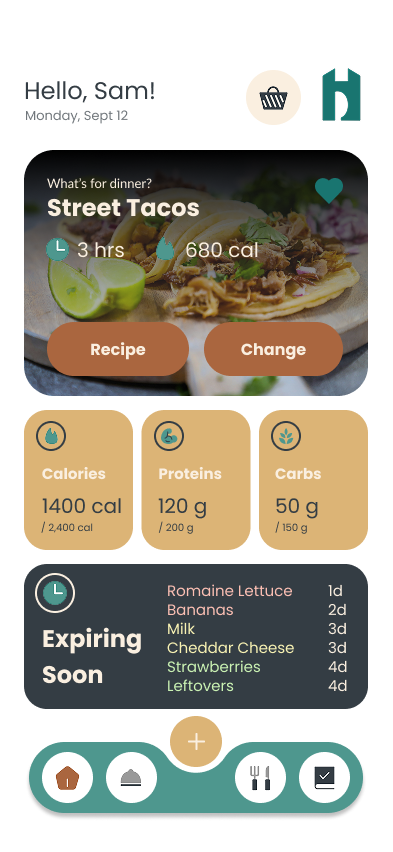

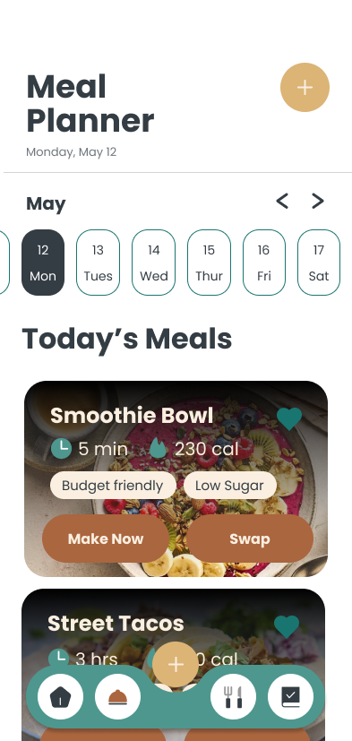

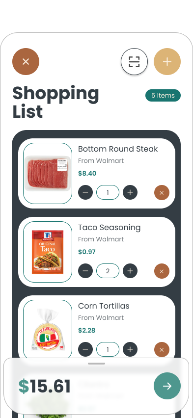
Process
The design process focused on reducing friction while keeping important information easy to find.
Features were refined so that related tasks worked together instead of behaving like separate tools. For example, pantry information, recipe suggestions, nutrition tracking, and shopping decisions were designed to support one another.
The meal planner was also simplified by removing unnecessary past and future month views, helping the experience stay focused on planning rather than functioning as a full calendar application.
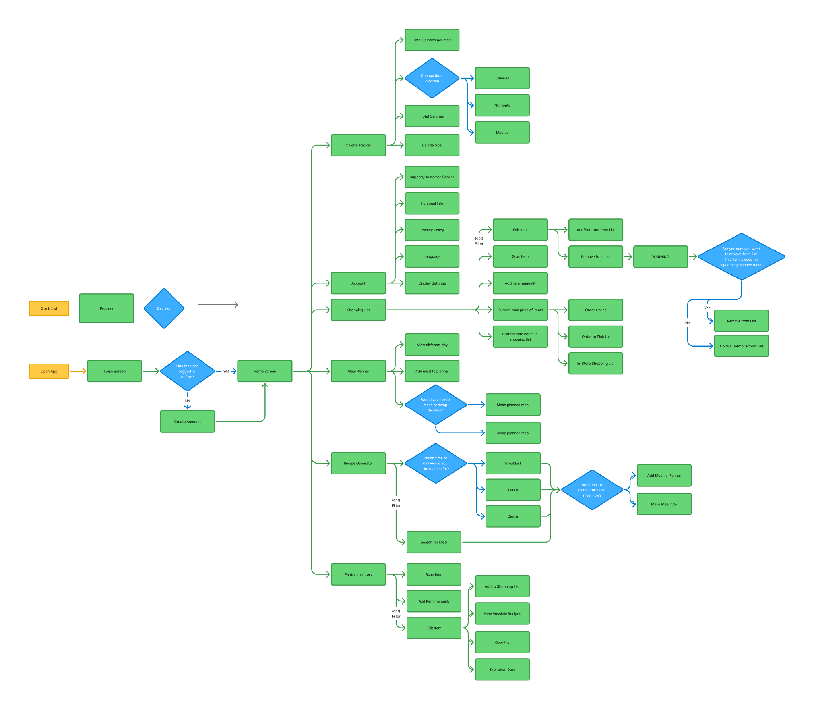
Iteration
Several parts of Hearth changed as the concept became more focused.
Feedback highlighted inconsistencies in some reward imagery and helped identify places where the experience could be simplified.
The Hearth logo was also revised after feedback that the original letterform could be mistaken for a “U.” The updated mark used a more box-like H to improve clarity.
The pantry scanner and calorie tracker were also connected more directly so the product behaved like one cohesive system.
Feature spotlight
Scanning gives users a faster way to build and maintain their pantry. That information can then support recipe ideas, shopping decisions, and nutrition tracking elsewhere in the app.
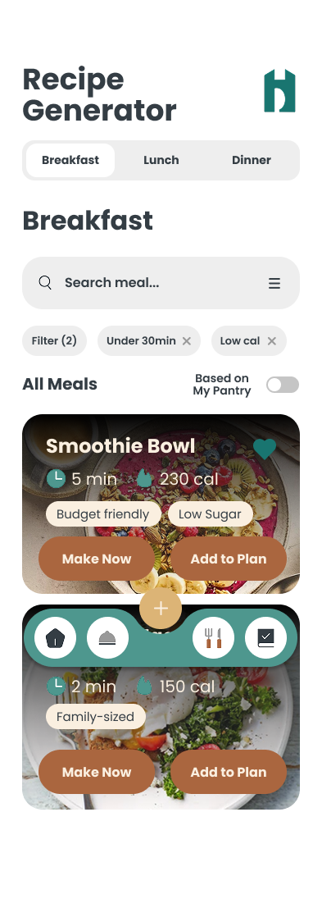
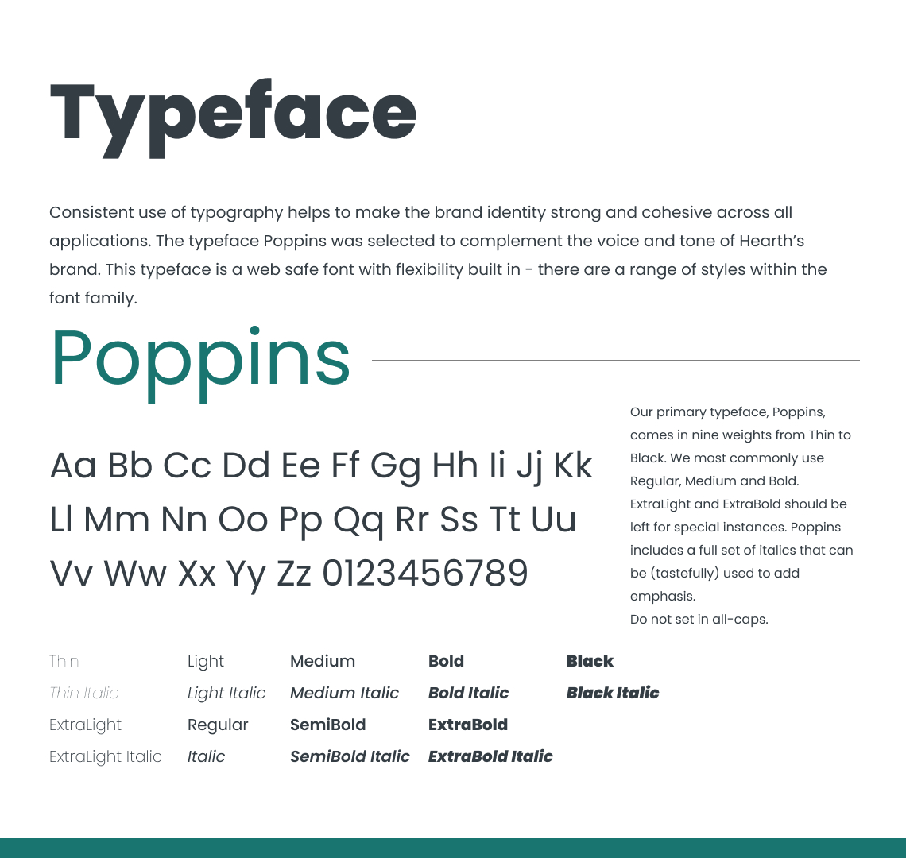


Visual design
Hearth's visual identity was designed to feel friendly enough for everyday use while still supporting information-heavy screens.
The core palette uses Moonlight, Night Sky, Sunset, Sage, and Egg Shell, balancing cool structure with warmer accents.
The interface relies on clear hierarchy, approachable shapes, and controlled color usage so important actions stand out without making the experience feel overwhelming.
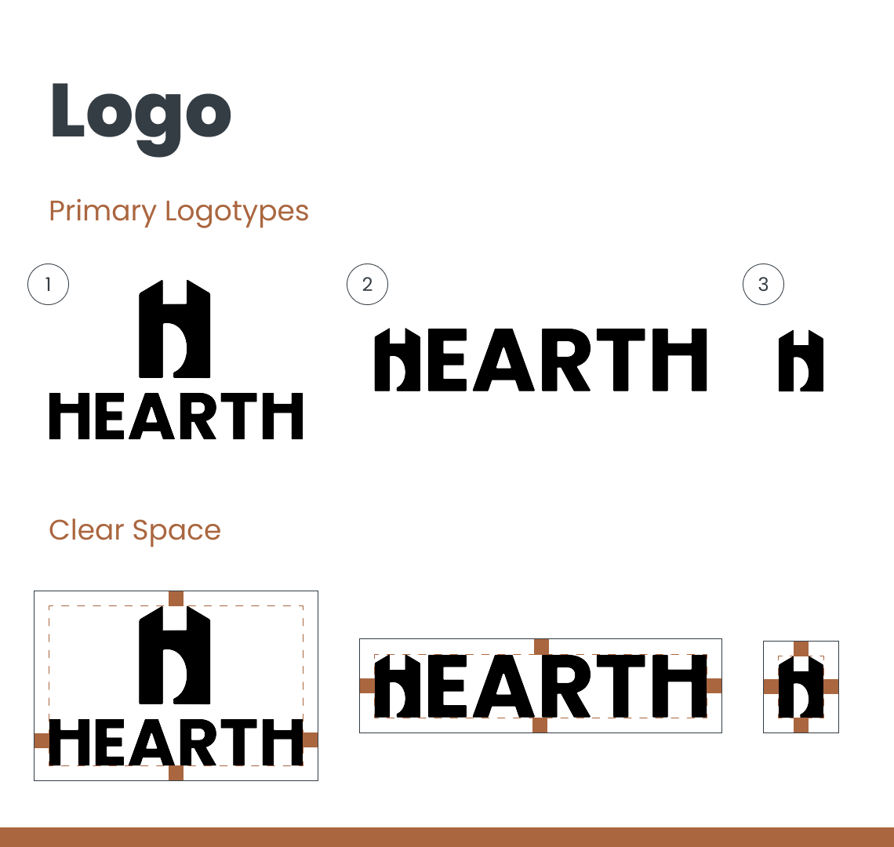
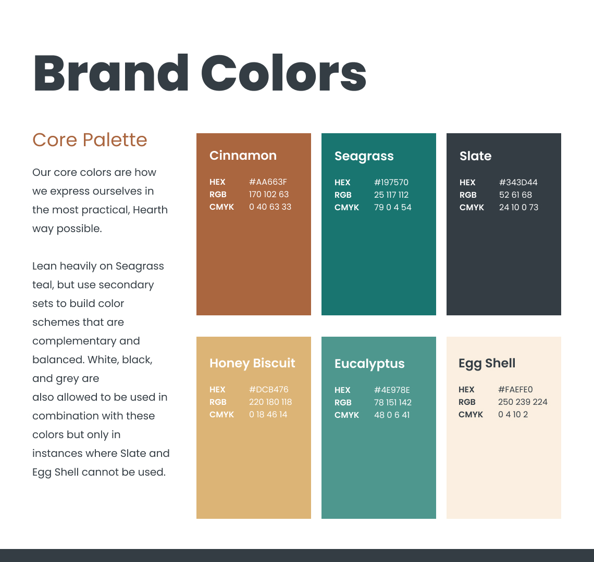
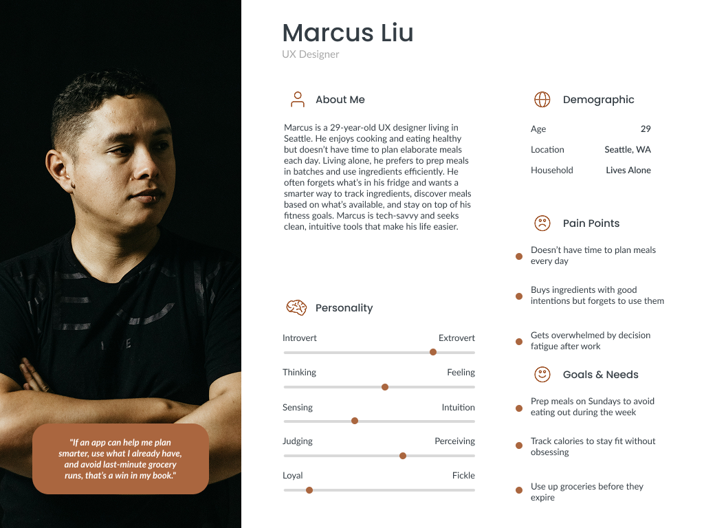
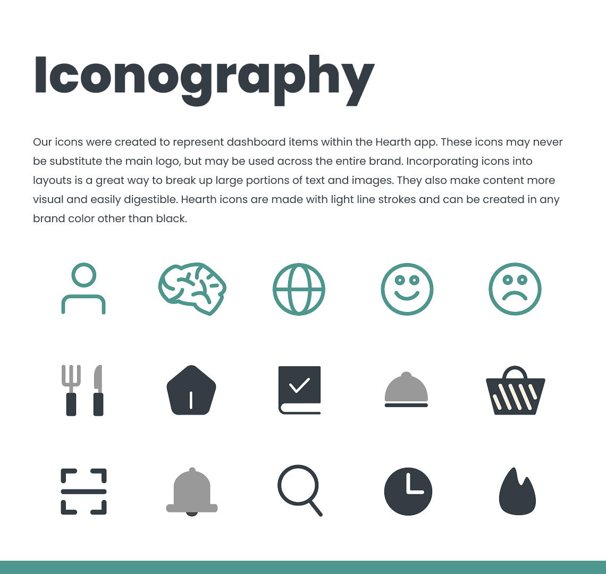
Final experience
The final concept combines meal planning, pantry awareness, nutrition, grocery planning, and leftover management into a connected experience.
Instead of asking users to repeatedly solve the same dinner problem from scratch, Hearth gives them context for making quicker, more informed choices.
The intended outcome is a meal-planning experience that can save time, reduce unnecessary food waste, support healthier habits, and simplify grocery shopping.
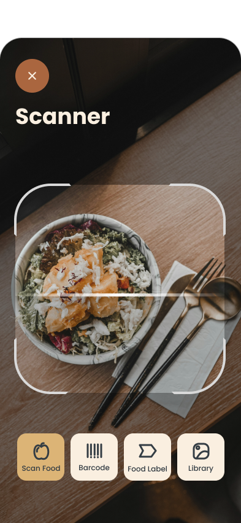
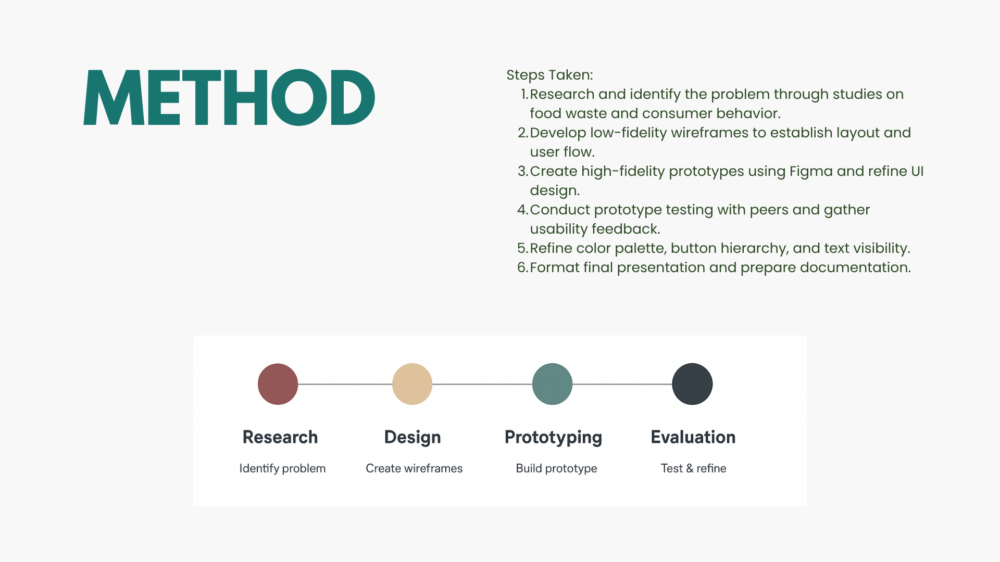
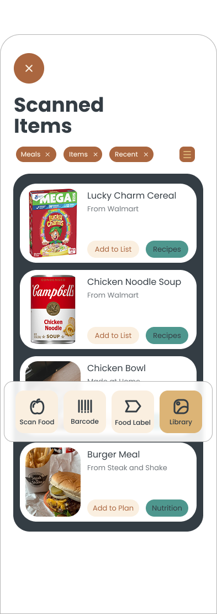
Reflection
Hearth reinforced the importance of thinking about how features influence one another across an entire product.
The strongest improvements came from simplifying unnecessary interactions, connecting related tools, and treating feedback as part of the design process rather than something added at the end.
The project helped me think more deeply about product structure, user flows, visual consistency, and how design decisions can reduce everyday friction.